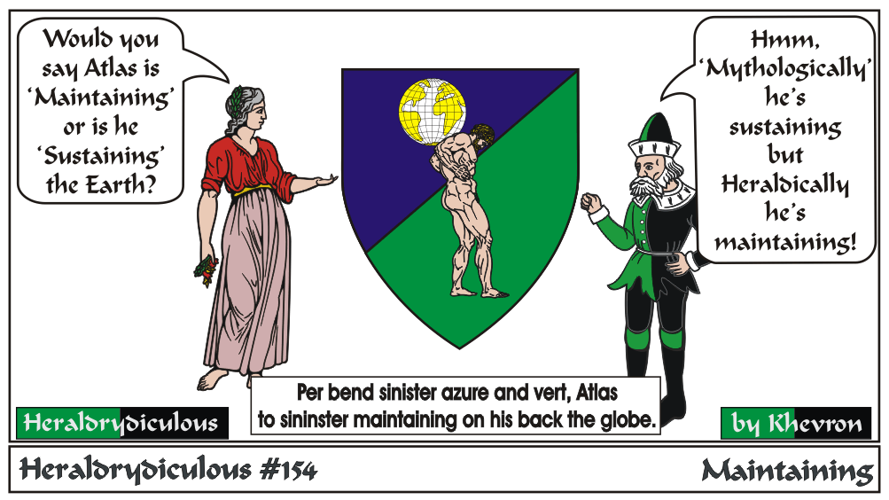

This 'ratio' of Earth to Altas is artistically common. Too, this unrealistic comparison of items sizes is common in heraldry. Usually the charges aren't
set to make a whole picture. So, you'll see ships and horseshoes carrying the same visual weight on the same armory.
Maintaining is an animate charge holding something small that won't affect the number of Clear Differences.
Sustaining is an animate charge holding another charge that makes a difference or could stand by itself size-wise.
e-mail: 
Back to Khevron's Heraldry Page